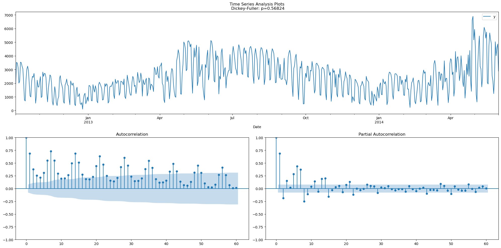
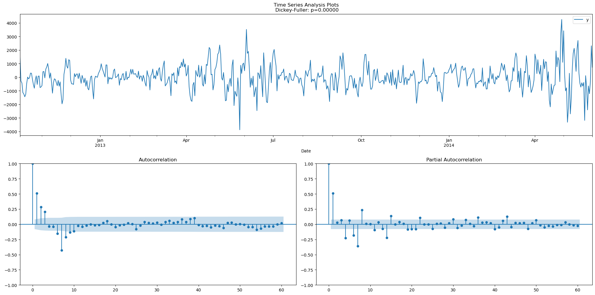
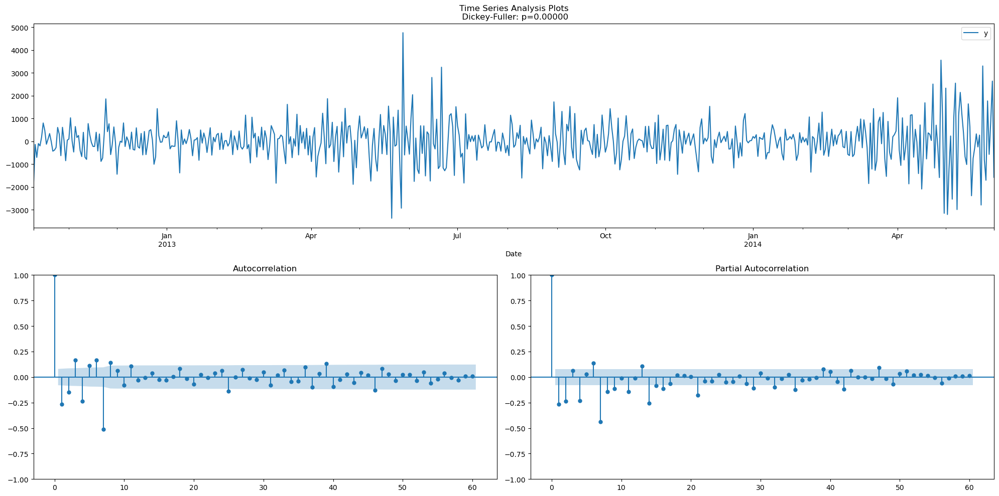
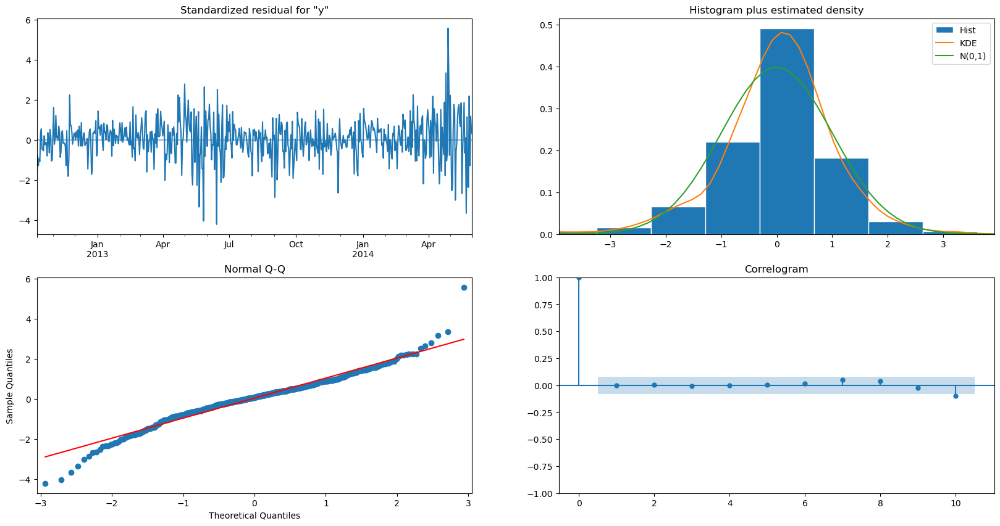
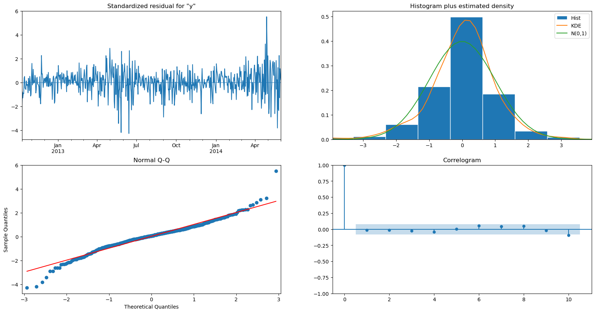
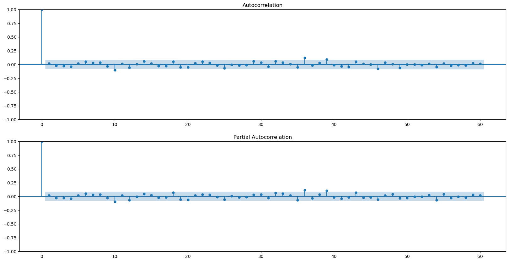

Focus: Time Series#
ARIMA#
import numpy as np
import pandas as pd
import matplotlib.pyplot as plt
import seaborn as sns
import statsmodels.api as sm
import statsmodels.tsa.api as smts
import statsmodels.tsa.stattools as smtst
from statsmodels.tsa.statespace.sarimax import SARIMAX
from statsmodels.stats.diagnostic import acorr_ljungbox
from itertools import product
import tqdm
df = pd.read_csv('time_series.csv', index_col='Date', parse_dates=True)
df
| y | |
|---|---|
| Date | |
| 2012-10-02 | 1938.0 |
| 2012-10-03 | 3521.0 |
| 2012-10-04 | 3475.0 |
| 2012-10-05 | 3148.0 |
| 2012-10-06 | 2006.0 |
| ... | ... |
| 2014-05-27 | 5032.0 |
| 2014-05-28 | 4008.0 |
| 2014-05-29 | 4587.0 |
| 2014-05-30 | 4869.0 |
| 2014-05-31 | 2887.0 |
607 rows × 1 columns
def tsplot(y, lags=None, figsize=(20, 10), title=None):
fig = plt.figure(figsize=figsize)
layout = (2, 2)
ts_ax = plt.subplot2grid(layout, (0, 0), colspan=2)
acf_ax = plt.subplot2grid(layout, (1, 0))
pacf_ax = plt.subplot2grid(layout, (1, 1))
y.plot(ax=ts_ax)
p_value = smts.adfuller(y)[1]
if title is None:
title = 'Time Series Analysis Plots'
ts_ax.set_title('{0}\n Dickey-Fuller: p={1:.5f}'.format(title, p_value))
smts.graphics.plot_acf(y, lags=lags, ax=acf_ax)
smts.graphics.plot_pacf(y, lags=lags, ax=pacf_ax)
plt.tight_layout()
tsplot(df, lags=60)

df_sdiff = (df - df.shift(7)).dropna()
tsplot(df_sdiff, lags=60)

df_2diff = df_sdiff.diff().dropna()
tsplot(df_2diff, lags=60)

candidate_model = sm.tsa.statespace.SARIMAX(df, order=(0, 1, 6), seasonal_order=(0, 1, 1, 7)).fit()
candidate_model.summary()
C:\Users\silve\AppData\Roaming\jupyterlab-desktop\jlab_server\lib\site-packages\statsmodels\tsa\base\tsa_model.py:473: ValueWarning: No frequency information was provided, so inferred frequency D will be used.
self._init_dates(dates, freq)
C:\Users\silve\AppData\Roaming\jupyterlab-desktop\jlab_server\lib\site-packages\statsmodels\tsa\base\tsa_model.py:473: ValueWarning: No frequency information was provided, so inferred frequency D will be used.
self._init_dates(dates, freq)
| Dep. Variable: | y | No. Observations: | 607 |
|---|---|---|---|
| Model: | SARIMAX(0, 1, 6)x(0, 1, [1], 7) | Log Likelihood | -4671.220 |
| Date: | Sun, 03 Dec 2023 | AIC | 9358.439 |
| Time: | 23:58:25 | BIC | 9393.601 |
| Sample: | 10-02-2012 | HQIC | 9372.128 |
| - 05-31-2014 | |||
| Covariance Type: | opg |
| coef | std err | z | P>|z| | [0.025 | 0.975] | |
|---|---|---|---|---|---|---|
| ma.L1 | -0.3710 | 0.031 | -12.036 | 0.000 | -0.431 | -0.311 |
| ma.L2 | -0.2547 | 0.038 | -6.753 | 0.000 | -0.329 | -0.181 |
| ma.L3 | -0.0418 | 0.034 | -1.221 | 0.222 | -0.109 | 0.025 |
| ma.L4 | -0.2354 | 0.035 | -6.637 | 0.000 | -0.305 | -0.166 |
| ma.L5 | 0.0191 | 0.037 | 0.514 | 0.607 | -0.054 | 0.092 |
| ma.L6 | 0.0523 | 0.035 | 1.501 | 0.133 | -0.016 | 0.120 |
| ma.S.L7 | -0.9324 | 0.015 | -61.301 | 0.000 | -0.962 | -0.903 |
| sigma2 | 3.394e+05 | 1.35e+04 | 25.215 | 0.000 | 3.13e+05 | 3.66e+05 |
| Ljung-Box (L1) (Q): | 0.00 | Jarque-Bera (JB): | 219.02 |
|---|---|---|---|
| Prob(Q): | 0.99 | Prob(JB): | 0.00 |
| Heteroskedasticity (H): | 2.29 | Skew: | -0.19 |
| Prob(H) (two-sided): | 0.00 | Kurtosis: | 5.94 |
Warnings:
[1] Covariance matrix calculated using the outer product of gradients (complex-step).
candidate_model.plot_diagnostics(figsize=(20,10))
plt.show()

lags = 60
fig, axes = plt.subplots(2, 1, figsize=(20, 10))
smts.graphics.plot_acf(candidate_model.resid, lags=lags, ax=axes[0])
smts.graphics.plot_pacf(candidate_model.resid, lags=lags, ax=axes[1])
plt.show()
acorr_ljungbox(candidate_model.resid, lags=[2*7], return_df=True, model_df=6) # model_df = p + q
| lb_stat | lb_pvalue | |
|---|---|---|
| 14 | 15.647813 | 0.047708 |
candidate_model2 = sm.tsa.statespace.SARIMAX(df, order=(0, 1, 4), seasonal_order=(0, 1, 1, 7)).fit()
candidate_model2.summary()
C:\Users\silve\AppData\Roaming\jupyterlab-desktop\jlab_server\lib\site-packages\statsmodels\tsa\base\tsa_model.py:473: ValueWarning: No frequency information was provided, so inferred frequency D will be used.
self._init_dates(dates, freq)
C:\Users\silve\AppData\Roaming\jupyterlab-desktop\jlab_server\lib\site-packages\statsmodels\tsa\base\tsa_model.py:473: ValueWarning: No frequency information was provided, so inferred frequency D will be used.
self._init_dates(dates, freq)
| Dep. Variable: | y | No. Observations: | 607 |
|---|---|---|---|
| Model: | SARIMAX(0, 1, 4)x(0, 1, [1], 7) | Log Likelihood | -4672.557 |
| Date: | Sun, 03 Dec 2023 | AIC | 9357.114 |
| Time: | 23:58:28 | BIC | 9383.485 |
| Sample: | 10-02-2012 | HQIC | 9367.381 |
| - 05-31-2014 | |||
| Covariance Type: | opg |
| coef | std err | z | P>|z| | [0.025 | 0.975] | |
|---|---|---|---|---|---|---|
| ma.L1 | -0.3604 | 0.030 | -12.003 | 0.000 | -0.419 | -0.302 |
| ma.L2 | -0.2415 | 0.036 | -6.634 | 0.000 | -0.313 | -0.170 |
| ma.L3 | -0.0366 | 0.031 | -1.196 | 0.232 | -0.097 | 0.023 |
| ma.L4 | -0.2121 | 0.032 | -6.630 | 0.000 | -0.275 | -0.149 |
| ma.S.L7 | -0.9160 | 0.015 | -59.577 | 0.000 | -0.946 | -0.886 |
| sigma2 | 3.416e+05 | 1.34e+04 | 25.578 | 0.000 | 3.15e+05 | 3.68e+05 |
| Ljung-Box (L1) (Q): | 0.07 | Jarque-Bera (JB): | 229.44 |
|---|---|---|---|
| Prob(Q): | 0.79 | Prob(JB): | 0.00 |
| Heteroskedasticity (H): | 2.30 | Skew: | -0.20 |
| Prob(H) (two-sided): | 0.00 | Kurtosis: | 6.00 |
Warnings:
[1] Covariance matrix calculated using the outer product of gradients (complex-step).
candidate_model2.plot_diagnostics(figsize=(20,10))
plt.show()

lags = 60
fig, axes = plt.subplots(2, 1, figsize=(20, 10))
smts.graphics.plot_acf(candidate_model2.resid, lags=lags, ax=axes[0])
smts.graphics.plot_pacf(candidate_model2.resid, lags=lags, ax=axes[1])
plt.show()

acorr_ljungbox(candidate_model.resid2, lags=[2*7], return_df=True, model_df=4) # model_df = p + q
---------------------------------------------------------------------------
AttributeError Traceback (most recent call last)
Cell In[13], line 1
----> 1 acorr_ljungbox(candidate_model.resid2, lags=[2*7], return_df=True, model_df=4) # model_df = p + q
File ~\AppData\Roaming\jupyterlab-desktop\jlab_server\lib\site-packages\statsmodels\base\wrapper.py:34, in ResultsWrapper.__getattribute__(self, attr)
31 except AttributeError:
32 pass
---> 34 obj = getattr(results, attr)
35 data = results.model.data
36 how = self._wrap_attrs.get(attr)
AttributeError: 'SARIMAXResults' object has no attribute 'resid2'
ps = range(0, 2)
qs = range(3, 6)
p = 0
d = 1
q = 4
Ps = range(0, 2)
Qs = range(0, 3)
P = 0
D = 1
Q = 1
s = 7
parameters = product(ps, qs, Ps, Qs)
parameters_list = list(parameters)
len(parameters_list)
def gs_arima(series, parameters_list, d, D, s, opt_method='powell'):
results = []
models = {}
best_aic = float("inf")
for param in parameters_list:
# we need try-except because on some combinations model might fail to converge
try:
model = sm.tsa.statespace.SARIMAX(
series,
order=(param[0], d, param[1]),
seasonal_order=(param[2], D, param[3], s)).fit(method=opt_method, disp=False)
except:
continue
aic = model.aic
if aic < best_aic:
best_model = model
best_aic = aic
best_param = param
results.append([param, model.aic])
result_table = pd.DataFrame(results)
result_table.columns = ['parameters', 'aic']
result_table = result_table.sort_values(by='aic', ascending=True).reset_index(drop=True)
return result_table, best_model
result_table, best_model = gs_arima(df, parameters_list, d, D, s)
result_table.head(10)
best_model.summary()
def mean_absolute_percentage_error(y_true, y_pred):
return np.mean(np.abs((y_true - y_pred) / y_true)) * 100
def plot_predictions(df, model, n_steps):
"""
Plots model vs predicted values
series - dataset with timeseries
model - fitted model
n_steps - number of steps to predict in the future
"""
data = df.copy()
data.columns = ['actual']
data['arima_model'] = model.fittedvalues
# forecast values
data['arima_model'][:s+d] = np.NaN
forecast = data['arima_model'].append(model.forecast(n_steps))
# calculate error, again having shifted on s+d steps from the beginning
error = mean_absolute_percentage_error(data['actual'][s+d:-n_steps], data['arima_model'][s+d:-n_steps])
plt.figure(figsize=(20, 10))
plt.title("Mean Absolute Percentage Error: {0:.2f}%".format(error))
plt.plot(forecast, color='r', label="model")
plt.axvspan(data.index[-1], forecast.index[-1], alpha=0.5, color='lightgrey')
plt.plot(data.actual, label="actual", alpha=0.8)
plt.legend()
plt.grid(True)
plot_predictions(pd.DataFrame(series), best_model, 60)